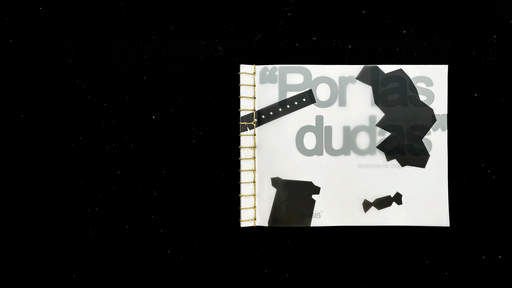
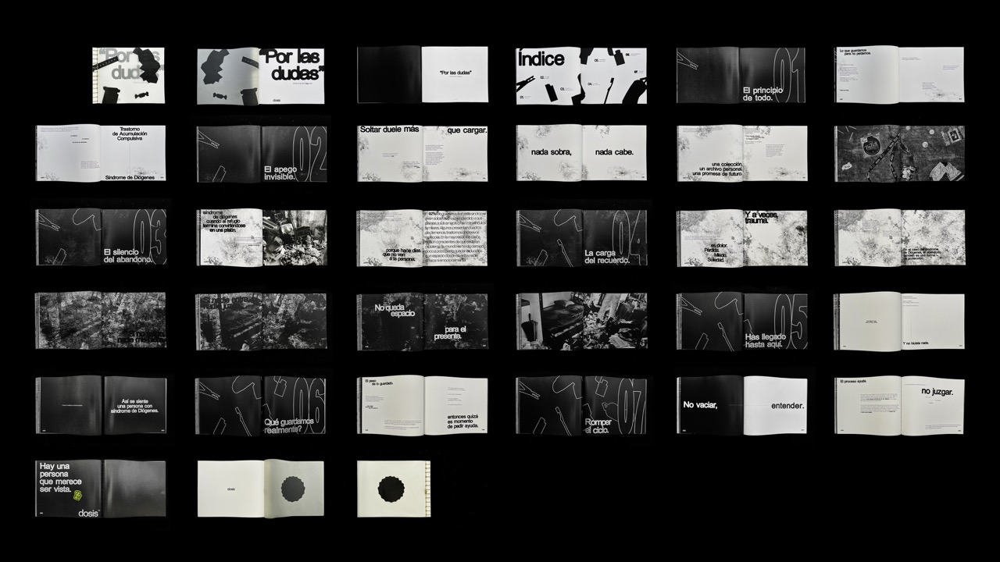
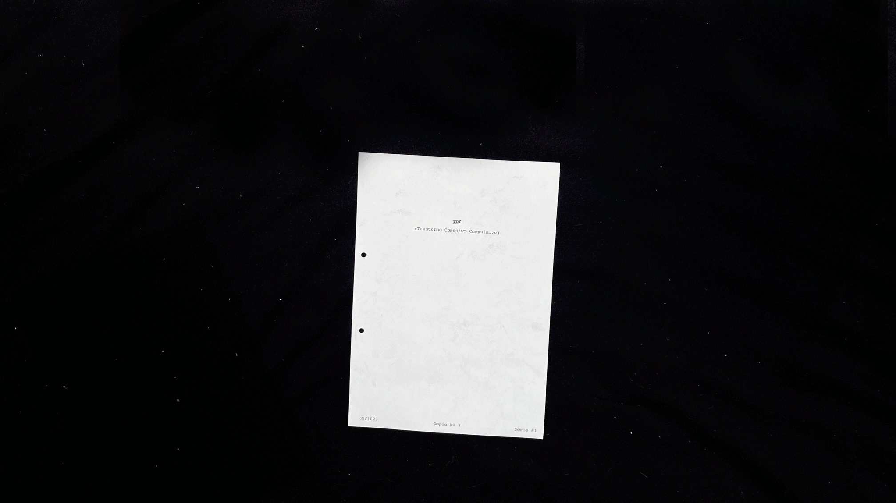

Hola, soy Martina, y ha llegado el famoso momento del texto en el que tengo que hablar bien de mí...
Me gusta el diseño que empieza desde cero: la investigación, el proceso, llegar a una solución que pueda defender y argumentar, no tanto el que solo busca quedar bonito. Me atrae que cada proyecto sea un problema diferente, o el mismo problema con una solución diferente. No hay dos iguales, y eso es exactamente lo que busco.
Y si aún no te he convencido, ten en cuenta que tengo una pequeña en casa que tiene que comer. Sí, estoy hablando de Lilo, mi perra, que te está esperando en la página de contacto ;)
Junior Designer, NTT DATA Incorporada como becaria y con responsabilidad y autonomía de júnior durante toda la etapa. Diseño para una agencia de marketing y publicidad interna (Tangity)
Sept. 2024 – Mar. 2026
Becaria de diseño gráfico, Qisu Brand Diseño y creación de contenido para RRSS, ads, diseño web y retoque fotográfico
Sept. 2022 – Nov. 2022
Becaria de diseño gráfico, LEADERS Influence Marketing Diseño y creación de contenido para RRSS
Nov. 2021 – Feb. 2022
Educación
Grado en Diseño Gráfico — LCI Barcelona & UDIT, Madrid
2020 – Junio 2026
Newton College, Lima (Perú)
Colegio bilingüe
Herramientas
Adobe Suite (Photoshop, Illustrator, InDesign, Premiere Pro, After Effects)
Yume es el proyecto con el que concluyo mi formación en diseño gráfico. Una aplicación de registro de sueños desarrollada de principio a fin como trabajo de fin de grado: investigación, concepto, identidad de marca, diseño de producto y estrategia de comunicación.
El punto de partida es una observación simple: los sueños desaparecen. No porque no importen, sino porque nadie ha hecho nada por retenerlos. La mayoría de las apps del mercado responden a eso con interpretaciones automáticas, simbologías genéricas o estéticas que se acercan más al horóscopo que a la experiencia real de soñar. Yume propone lo contrario.
No interpreta. Ayuda a registrar, volver y observar, con el tiempo suficiente para que algo tenga sentido. La inteligencia artificial forma parte de esa idea: no analiza al usuario ni extrae conclusiones, sino que propone preguntas y sugiere conexiones, acompañando el proceso sin dirigirlo.
Detrás de cada decisión hay investigación. Entrevistas con usuarios, análisis del mercado, un marco conceptual construido desde la psicología contemporánea del sueño para no caer en los mismos lugares comunes del sector. El sistema visual, el tono, la forma en que la app se comporta: todo responde a esa base.
Yume no promete respuestas. Ofrece un lugar donde guardarlas hasta que lleguen.
Yue Minjun es uno de los artistas contemporáneos más reconocidos en China.
Trabaja con óleo y acuarela, y además es un destacado escultor y grabador.
Sin embargo, fuera de China, su obra sigue siendo relativamente desconocida.
Por eso decidí diseñar una exposición ficticia de su trabajo, imaginada en
Madrid, España.
Bajo el título “Permanent Smile”, la muestra busca acercar a un público más
amplio el impactante universo visual de Yue Minjun.
La salud mental necesita ser hablada, comprendida y sentida. dosis nace como una serie editorial limitada que utiliza el diseño y la narrativa visual para traducir aquello que, muchas veces, las palabras no alcanzan a explicar.
No se plantea como un manual clínico, sino como un ejercicio de empatía. Cada entrega transforma un trastorno en una experiencia tangible, invitando al lector a implicarse activamente en el recorrido. Cada mes, una pieza, una historia y una perspectiva distinta, siempre desde el respeto, evitando romantizar o caricaturizar la complejidad de la mente humana.
La primera edición aborda tres trastornos mediante recursos editoriales específicos.
Síndrome de Diógenes / "Por las dudas"
Esta pieza obliga a recorrer el trastorno de forma progresiva. Desde una aparente normalidad inicial, el lector avanza hacia el desorden, la acumulación y el encierro. El caos crece página a página de forma lenta pero inevitable, generando una sensación de agobio espacial.
Formato: 260 × 210 mm horizontal, encuadernación japonesa.


TOC / Trastorno obsesivo compulsivo
La pieza no se limita a explicar el TOC: propone experimentarlo. A través de instrucciones, repeticiones y pequeños rituales, el lector deja de ser observador para convertirse en parte activa del trastorno.
Formato: carpeta A4 con hojas sueltas.

Trastorno de bipolaridad / "un mismo lugar"
La publicación se divide en tres secciones que representan distintos estados del trastorno. Las páginas, cortadas horizontalmente, permiten combinaciones libres, de modo que el lector puede superponer y recorrer los estados a su ritmo, construyendo una experiencia no lineal.
(drift) es un hard seltzer diseñado para una generación que busca más que
solo una bebida: busca una experiencia.
Pensado para un público que valora la estética, la música y la experimentación,
(drift) se inspira en la cultura underground y en aquellos que encuentran
belleza en lo inesperado.
Con combinaciones de sabores inesperadas y una identidad minimalista pero
disruptiva, (drift) no sigue las reglas tradicionales, sino que invita a dejarse
llevar. Es una bebida para quienes disfrutan lo sensorial, lo conceptual y lo
cuidadosamente diseñado.
Buenos Aires Trap 2024 fue un festival celebrado en diciembre de 2024 en Buenos Aires, Argentina. Reunió a algunos de los nombres más importantes de la escena global del trap. El trap es un género que ha ganado una enorme popularidad en los últimos años y, en Argentina, ha desarrollado una identidad muy marcada a través de artistas como Duki, Neo Pistea y Nicki Nicole, entre otros.
En mi opinión, el diseño original del festival no reflejaba la cultura del trap, ni a los artistas que participaban, ni al público que asistía. Por eso decidí rediseñar por completo la identidad visual, con el objetivo de representar mejor la esencia del género y de su comunidad.
Te recomiendo darle play para meterte en el mood del proyecto.
Teniendo la libertad de diseñar un vinilo para cualquier artista o banda reconocida,
decidí abordar el proyecto desde un enfoque distinto, explorando un lenguaje más
conceptual y surrealista.
El vinilo presenta una reinterpretación de The Pink Panther Soundtrack, introduciendo
un giro contemporáneo: todas las pistas han sido transformadas en remixes de techno,
conservando la melodía original como eje principal.
El proyecto se inspira en el remix “The Groovy Cat” de blanc, que sirvió como referencia
para fusionar un imaginario clásico con una estética sonora y visual actual, trasladando
el álbum a un nuevo contexto cultural.